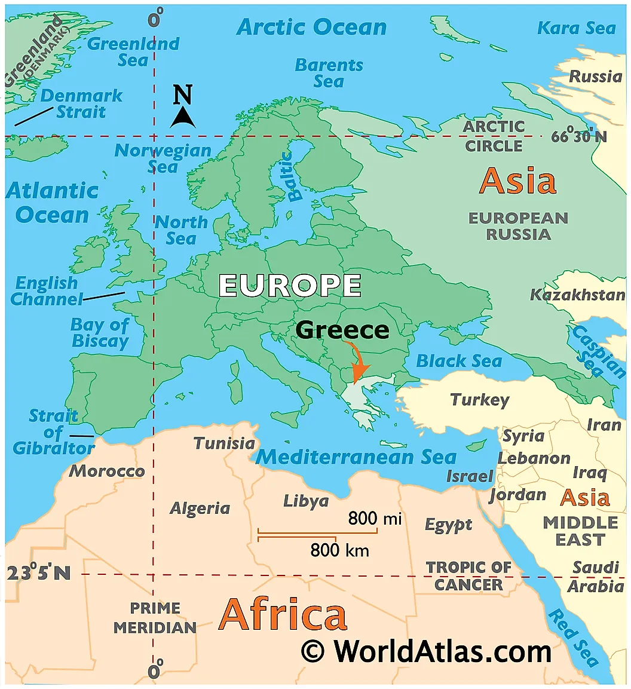
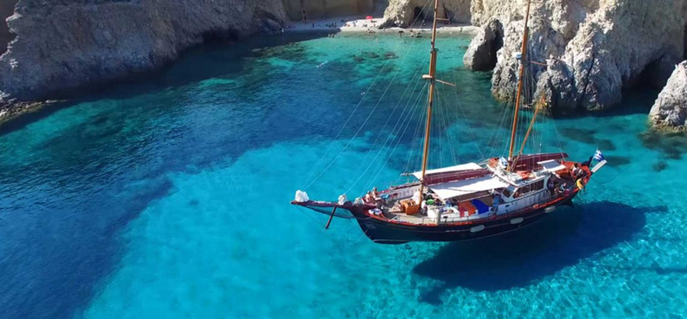

Overview
- Greece
- Trip Options
- Trip Itinerary
1. Greece
About Greece
Greece officially the Hellenic Republic is a country in south East Europe. Greece has the longest coastline on the Mediterranean Basin, featuring thousands of islands. Learn more.
Importance of Greece
Greece is considered the cradle of Western civilization, being the birthplace of democracy, Western philosophy, Western literature, historiography, political science, major scientific and mathematical principles, theatre and the Olympic Games.
2. Trip Options
Athens
Athens, the capital of Greece, is one of the world's oldest cities spanning over 3000 years. It was a centre for the arts, learning and philosophy, and the home of Plato's Academy and Aristotle's Lyceum.
Volcanic Islands
Greece has over 1000 islands. The famous ones to visit being Santorini, Mykonos, Crete and Milos islands. The volcanic islands of Santorini, Milos are more popular due to - the volcano!!!.
3. Trip itinerary
The final trip itinerary that we chose
| Date | Location | Remarks |
|---|---|---|
| 5th May | Athens | Arrive at Athens. Overnight stay. Chill out |
| 6th May | Milos Islands | Take a ferry from Athens to Milos islands |
| 7th - 10th May | Milos Islands | Kayanking, Sunset at Plaka castle, Boat ride to Kleftiko. |
| 10th - 13th May | Athens | Acropolis, Enjoy Greek food on Athens city walks |